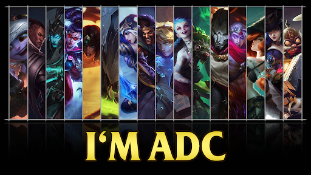

La linea de Bot es el carril inferior del mapa de la grieta del invocador. En estas linea generalmente suele haber dos jugadores de cada equipo (en la fase de líneas), que son el supp y el adc.
El adc es el rol de un jugador, el cual es el que suele aportar daño AD desde la distancia. Estos campeones suelen ser débiles, aunque tienen mucho daño, por eso necesitan a alguien que les aporte protección.
El supp es el rol que asume un jugador, el cual implica ayudar a los demás a que cumplan su función protegiéndolos. Este casi siempre intenta que su adc consiga todo el oro posible (dejandole el farm y los asesinatos).